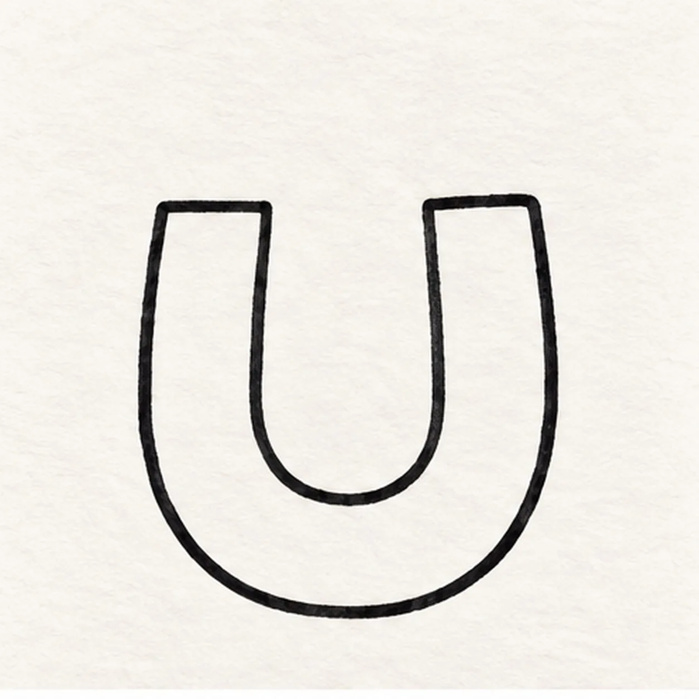
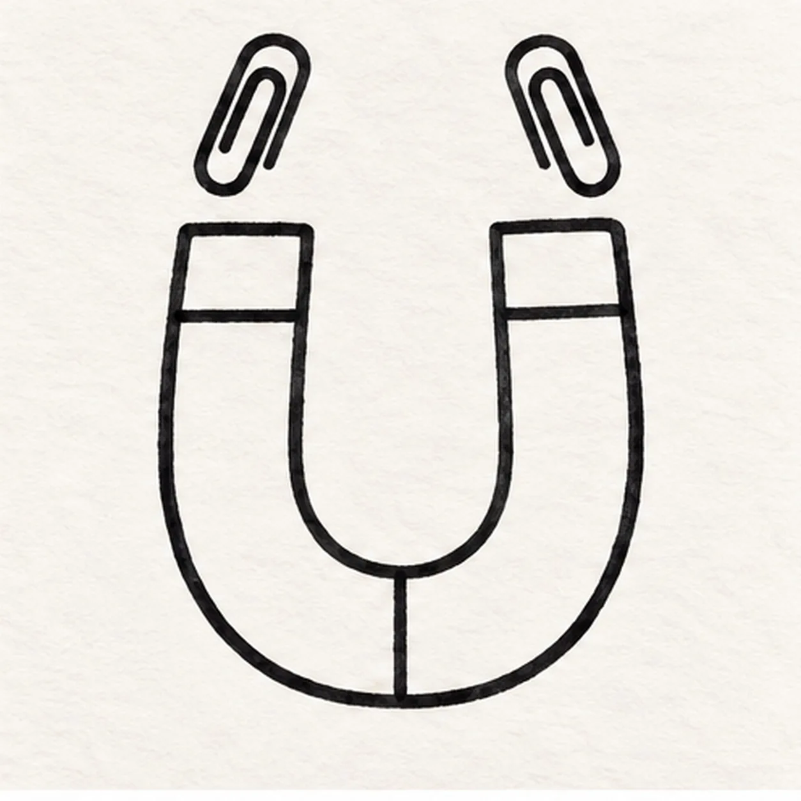
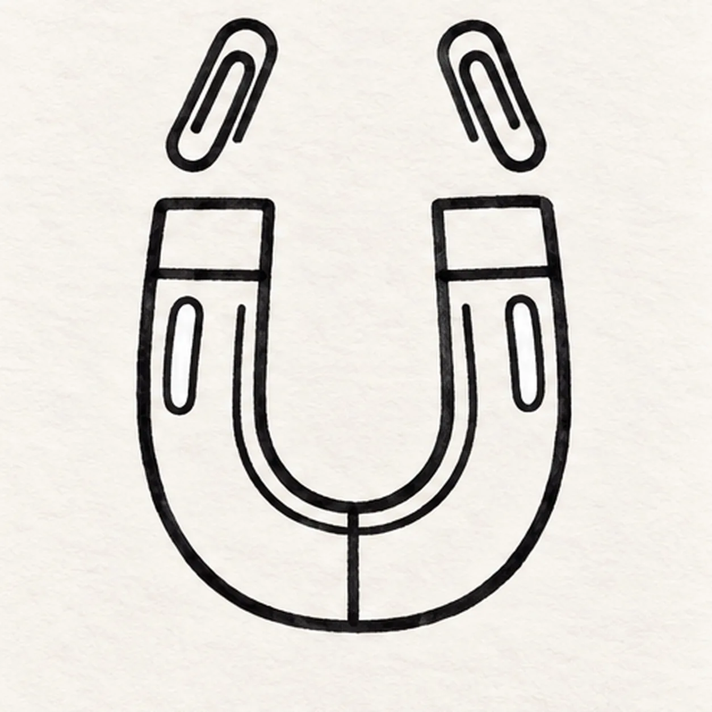
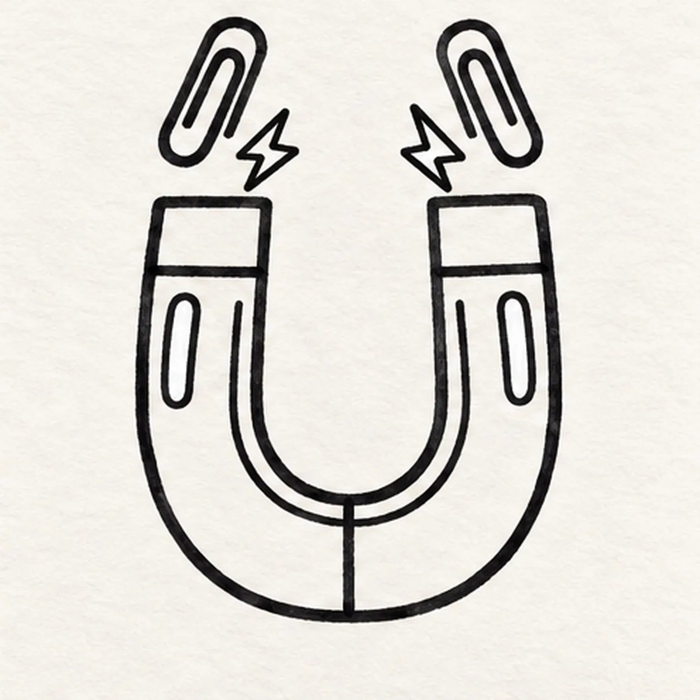

Felt-tip marker mode
Let's draw a horseshoe magnet
Treat this as one playful practice round: sketch the idea loosely, simplify the shapes, then commit with confident marker outlines and bright fills.
-
01

Draw the horseshoe band
Draw a wide U with two upright sides and a rounded bottom. Turn across each flat top end and follow a smaller U inside, making one thick horseshoe-shaped band. Keep the opening wide enough for two floating paper clips.
Marker tip: Keep the band wide enough for color; compare the spaces inside and outside the U.
-
02

Add the seams and clips
Draw a horizontal seam across each arm below its flat end and a short vertical seam across the bottom center of the U. Above each tip, draw a narrow loop that curls back inside itself to form a paper clip. Tilt the left clip right and the right clip left, keeping a clear paper gap above each tip.
Marker tip: A paper clip is a long looping stroke with a smaller return inside. Leave the return open.
-
03

Reserve the highlights
Inside each arm, draw a narrow rounded highlight shape below the tip seam. Add a thin U-shaped inset line along the inner curve of the magnet, stopping both ends below the tip seams so the metal caps remain clear.
Marker tip: Keep the inset line and highlights apart so each has a clear job when you add color.
-
04

Add two magnetic sparks
In the open space between the clips, draw two small closed zigzag spark shapes, one above the left tip and one above the right. Keep both sparks separate from the clip wires and leave the center opening airy.
Marker tip: Two small sparks are enough. Their empty surroundings help the pulling motion read clearly.
-
05

Fill the magnet with color
Fill the left half red and the right half cobalt blue, meeting at the bottom seam. Leave both enclosed highlights white. Shade the tips and clip wires lightly gray, fill the two sparks yellow, and darken the narrow inner bevel with the matching red or blue. Keep visible marker strokes inside the existing outlines.
Marker tip: Pull red and blue strokes around the bend. Leave both highlights untouched and keep the inner line visible.
![Handmade felt-tip marker drawing of one left-facing coral wind-up toy mouse with one round mustard inner ear, one sleepy crescent eye, one black triangular nose, one crooked smile, exactly three black whiskers, exactly two teal feet with two seam marks each, one black tail curled into an open loop, one attached mustard wind-up key with two oval lobes, exactly three teal body spots, exactly two open-paper highlights, thick imperfect black outlines, visible marker streaks, and one broken deep-navy shadow](../assets/cartoon-wind-up-mouse-finished-v1.webp)